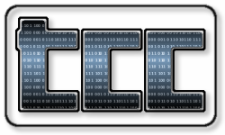

Tiny C Compiler
News
[Note: I am no longer working on TCC. Check the mailing list to get up
to date information.]
Features
- SMALL! You can compile and execute C code everywhere, for
example on rescue disks (about 100KB for x86 TCC executable,
including C preprocessor, C compiler, assembler and linker).
- FAST! tcc generates x86 code. No byte code
overhead. Compile, assemble and link several times faster than GCC.
- UNLIMITED! Any C dynamic library can be used directly. TCC is
heading torward full ISOC99 compliance. TCC can of course compile
itself.
- SAFE! tcc includes an optional memory and bound
checker. Bound checked code can be mixed freely with standard
code.
- Compile and execute C source directly. No linking or assembly
necessary. Full C preprocessor and GNU-like assembler
included.
- C script supported : just add '#!/usr/local/bin/tcc -run' at the first
line of your C source, and execute it directly from the command
line.
- With
libtcc, you can use TCC as a backend for dynamic code
generation.
Compilation Speed
Compilation speed for the Links
Browser project. There are 76936 lines (including
headers). 1950947 lines (67.2 MBytes) are compiled because the same headers are
included in many files. TinyCC is about 9 times faster than
GCC.
| Compiler | Time(s) | lines/second | MBytes/second |
| TinyCC 0.9.22 | 2.27 | 859000 | 29.6 |
| GCC 3.2 -O0 | 20.0 | 98000 | 3.4 |
Measures were done on a 2.4 GHz Pentium 4. Real time is measured. Compilation
time includes compilation, assembly and linking.
More up to date tests are available:
1,
2,
3,
4.
You want to help ?
Here are some suggestions:
- Report bugs to the mailing list (and eventually fix them).
Links
License
TCC is distributed under the GNU Lesser General Public License.
Copyright (c) 2001-2018 Fabrice Bellard
Fabrice Bellard -
http://bellard.org/ - http://www.tinycc.org/